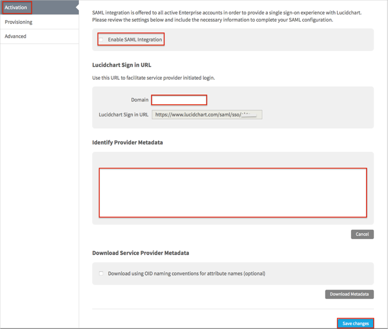

Log in to LucidChart as an administrator.
Navigate to Team > App Integration > SAML.
Select Activation.
Check the Enable SAML Integration box.
Enter your Domain.
Copy and paste the following into the Identity Provider Metadata field:
Sign into the Okta Admin dashboard to generate this value.
Click Save changes.

Done!
Notes:
IDP-initiated flows, SP-initiated flows, and Just In Time (JIT) provisioning are all supported.
Open Lucidchart Sign in URL: https://www.lucidchart.com/saml/sso/[yourDomain].